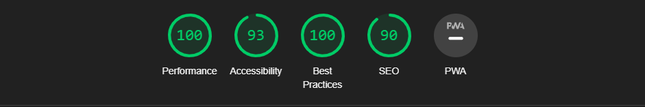

Nøkkelord
nøkkelordene jeg skal ta i bruk er : jordan, jordan i norge, sko, nettbutikk sko, sneakers, populære sko, billige sko, nike sko.
nøkkelordene jeg skal ta i bruk er : jordan, jordan i norge, sko, nettbutikk sko, sneakers, populære sko, billige sko, nike sko.
hvorfor jeg valgte ut disse spesifike nøkkelordene er på grunn av følgende årsåker. ord som sko og nettbutikk sko, dette skal fungere som generelle søkeord. søkeord som jordan, sneakers og nike sko. skal være kategori og merke basert nøkkelord. disse skal fortelle om hva slags sortement butikken har. det var derfor jeg valgte disse. nøkkelordet jordan i norge valgte jeg på grunnlag av geografiske årsaker. populære sko og billige sko er to nøkkelord som er veldig viktig siden det er de to hoved tingene man ser på når man er på skojakt.

på perfomance fikk jeg 98 i score. diagnosen viser til at noen av bildene på siden ikke har en fastsatt width og height, noen som kan enkelt løses ved å sette max width(noe som jeg har gjort på nyheter bildet, men ikke de under) . og den andre er "Serve static assets with an efficient cache policy". dette betyr at det er litt mer lastetid på nettsiden enn det nødvendigvis trenger å. dette er ikke noe som er helt krise siden lastesiden er forsatt relativt kjapp. dette kan løses, vis jeg implementerer riktig mellomlagringspolitikk.

på accessibility fikk jeg 92 i score. feil som var her var at "links do not have a discernible name" dette blir referert til de ikonene som er på topp høyre sidet som shopping cart og hjerte(favoritter). dette har noe å gjøre med at de lenkene er tomme og derfor reagerer lighthouse på det.
på best practices er score 100, som man ser i screenshoten over teksten forside lighthouse, dette betyr at ifølge lighouse det er ikke noe rom for forbrederinger.
på SEO fikk jeg 90 i score. der står det "document does not have meta description". ganske enkel løsningen for å løse dette, å det er å legge til meta tags.

er en helt prikklik lighthouse analyse, som den over. med akuratt samme ting lighthouse reagerer på.
